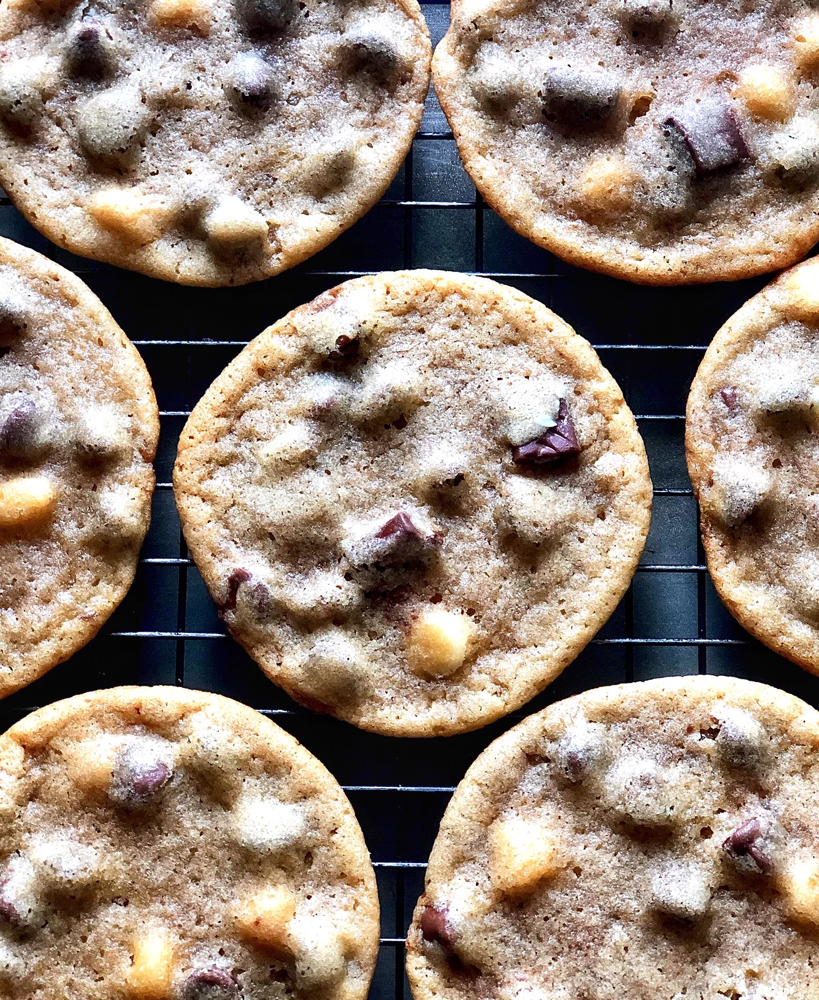

Triple Chocolate Chunk Cookies

Description
Cookies with three different types of chocolate.
Ingredients
- 3/4 cup brown sugar
- 1/2 cup unsalted butter
- 1/2 cup white sugar
- 1 tsp salt
- 1 large egg
- 1 tsp vanilla
- 1.5 cups flour
- 3/4 tsp baking soda
- 1 cup milk chocolate
- 1 bar dark chocolate
- 3 tbsp white chocolate
Steps
- Combine sugar, butter, salt in large bowl. Beat until screamy. Add egg and vanilla, beat until smooth.
- In separate bowl, mix flour and baking soda. Slowly add to wet ingredients until mostly incorporated. Fold in chocolate. Cover and refrigerate for at least 30 min.
- Preheat oven to 350 degres F.
- Divide dough into 2.25 ounce portions and place onto baking sheet.
- Bake until edges are golden brown. Remove from oven and allow to cool and set, about 30 minutes.
Recipe reference here
Back to home